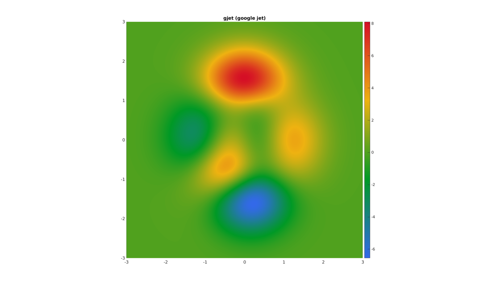
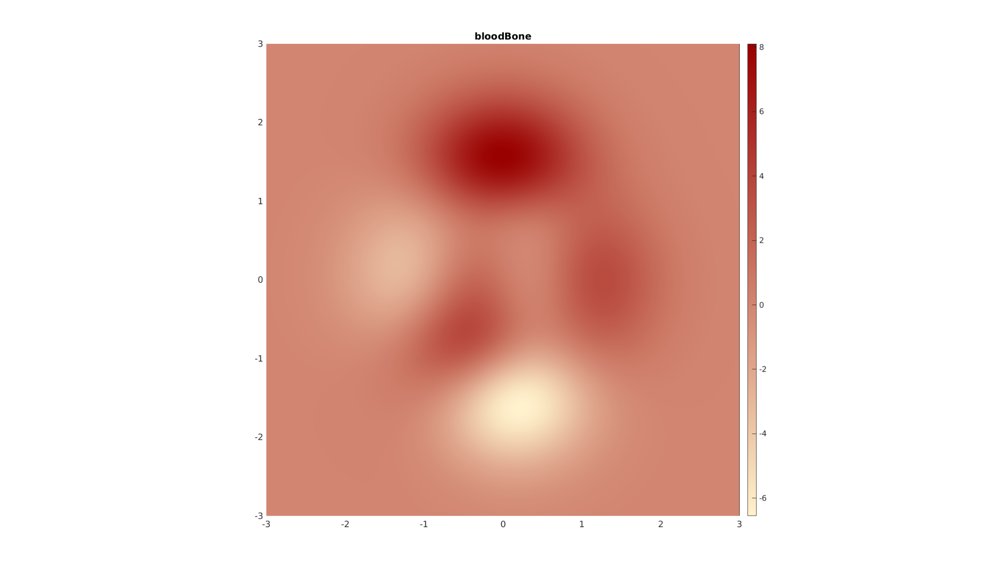
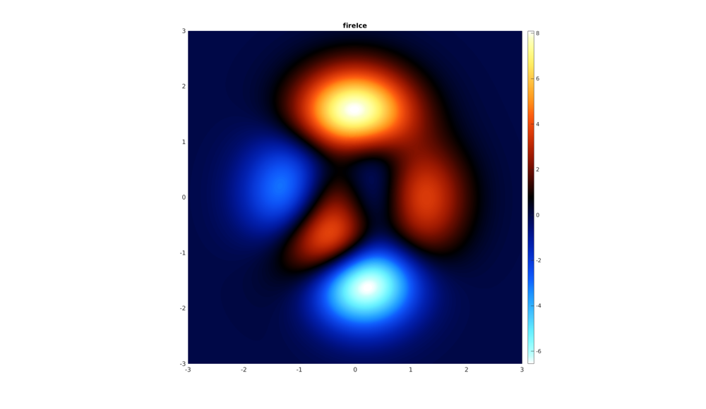
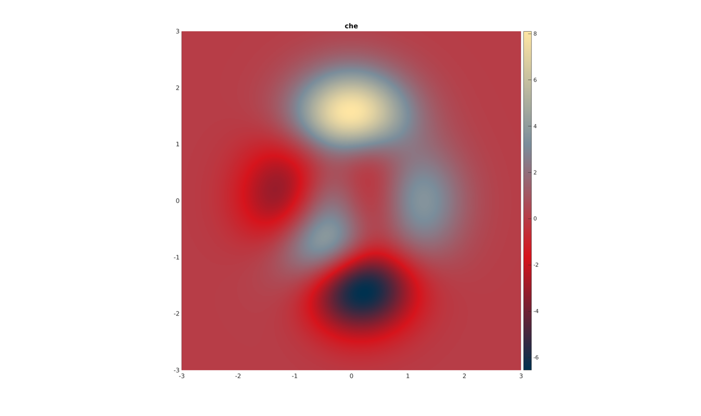
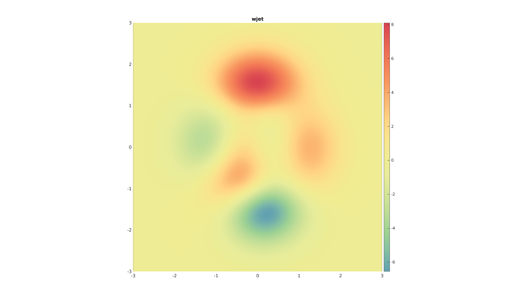
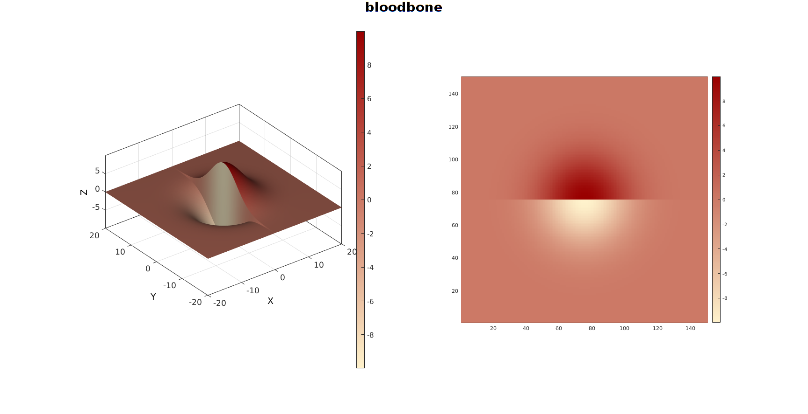
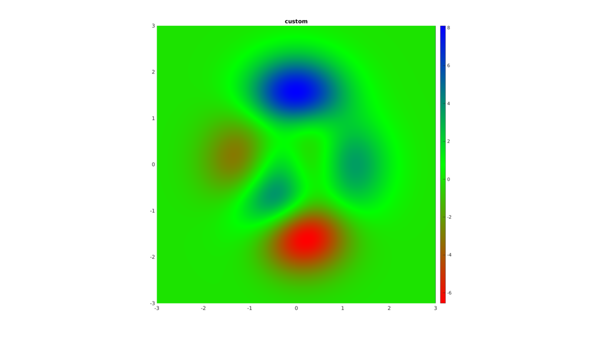

DEMO_additional_colormaps
Below is a demonstration for:
- Additional colormaps available in GIBBON
Contents
clear; close all; clc;
%Plot settings fontSize=15; % Create example data for visualizations [X,Y,Z]=peaks(250);
The gjet (google jet) map
A jet like colormap inspired by the Google colors. Has quite a homogeneous color intensity.
cFigure; hold on; title('gjet (google jet)'); surf(X,Y,Z); shading interp; colormap(gjet(250)); colorbar; view(2); axis equal; axis tight; grid on; box on; set(gca,'FontSize',fontSize); drawnow;
The bloodBone colormap
cFigure; hold on; title('bloodBone'); surf(X,Y,Z); shading interp; colormap(bloodBone(250)); colorbar; view(2); axis equal; axis tight; grid on; box on; set(gca,'FontSize',fontSize); drawnow;
The fireIce colormap
The fireIce colormap is good for "wrapped" data since it starts and ends white (e.g. angular data whereby 2*pi might be the same as 0).
cFigure; hold on; title('fireIce'); surf(X,Y,Z); shading interp; colormap(fireIce(250)); colorbar; view(2); axis equal; axis tight; grid on; box on; set(gca,'FontSize',fontSize); drawnow;
The che (as in Che Guevara) colormap
cFigure; hold on; title('che'); surf(X,Y,Z); shading interp; colormap(che(250)); colorbar; view(2); axis equal; axis tight; grid on; box on; set(gca,'FontSize',fontSize); drawnow;
The wjet colormap
cFigure; hold on; title('wjet'); surf(X,Y,Z); shading interp; colormap(wjet(250)); colorbar; view(2); axis equal; axis tight; grid on; box on; set(gca,'FontSize',fontSize); drawnow;
The wcbp (white cyan blue purple) colormap
cFigure; hold on; title('wcbp (white cyan blue purple)'); surf(X,Y,Z); shading interp; colormap(wcbp(250)); colorbar; view(2); axis equal; axis tight; grid on; box on; set(gca,'FontSize',fontSize); drawnow;
Create your own colormap
Define your own colormap using RGB values (you can search online fpr color charts with rbg values, if given as unit8 number, normalize by deviding by 255).
red_rgb=[1 0 0]; green_rgb=[0 1 0]; blue_rgb=[0 0 1]; rgbData=[red_rgb; green_rgb; blue_rgb]; n=250; %Color levels [my_colormap]=resampleColormap(rgbData,n); cFigure; hold on; title('custom'); surf(X,Y,Z); shading interp; colormap(my_colormap); colorbar; view(2); axis equal; axis tight; grid on; box on; set(gca,'FontSize',fontSize); drawnow;

GIBBON www.gibboncode.org
Kevin Mattheus Moerman, gibbon.toolbox@gmail.com
******** license boilerplate ********
Copyright 2017 Kevin Mattheus Moerman
Licensed under the Apache License, Version 2.0 (the "License"); you may not use this file except in compliance with the License. You may obtain a copy of the License at
http://www.apache.org/licenses/LICENSE-2.0
Unless required by applicable law or agreed to in writing, software distributed under the License is distributed on an "AS IS" BASIS, WITHOUT WARRANTIES OR CONDITIONS OF ANY KIND, either express or implied. See the License for the specific language governing permissions and limitations under the License.